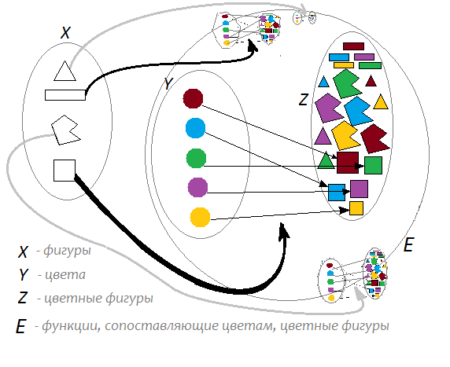

Функция
Это отображение одного множества (которое, область определений),
в другое множество (которое, область значений).
Я могу 'кинуть' элемент множества \(A\) в функцию, и она в ответ 'плюнет' в меня элементом множества \(B\).
Вот пример функции, которая сопоставляет цветной фигуре, её цвет.
На 'входящий' элемент множества "цветные фигуры",
'выдаёт' элемент множества "цвета"

3.svg" title="через Викисклад">Function_color_example_3.gif: Wvbailey.Изначально этот файл был загружен участником Wvbailey из английский Википедияderivative work: Zerodamage / CC BY-SA
Результат выполнения/вычисления функции, будет элементом множества, в которое указывают стрелки
Функции записывают так: \(F(x)\)
тут \(F\) -- имя функции, а \(x\) -- имя аргумента, который принадлежит множеству из которого выходят стрелки.
Функции c большим числом аргументов \(F(a, b, ...)\) -- это цепочка из функций, которые возвращают функции.
К примеру, вот конструктор цветной фигуры

Ты 'даёшь' ему фигуру, а он 'возвращает' тебе функцию.
Ты 'даёшь' этой функции цвет, а она 'возвращает' тебе цветную фигуру.